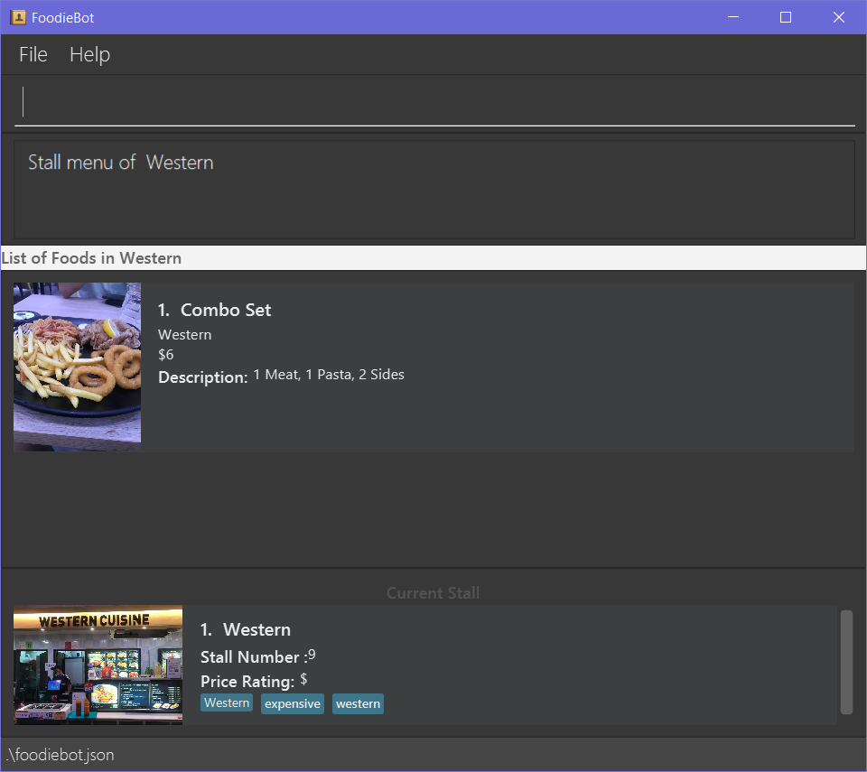

Overview
Our team was tasked to make a new application by morphing from the existing AddressBook-3 application and building on it. We decided to make FoodieBot, which maintains the CLI style of AddressBook-3 while updating the GUI and adding additional functionality.
FoodieBot is an application built for people around NUS in order to help them with various problems which may crop up from time to time while dining in NUS. It can help users decide by randomizing food options, get directions from Point A to Point as well as help the user plan their budget.
Summary of contributions
-
Enhancement: added the enter function
-
What it does: it allows users to switch from viewing the list of canteens to viewing the list of stalls and from the list of the stalls to view the menu of each individual stall.
-
Justification: Suppose that the user wants to find out more about the stalls in a canteen or more information about the food provided in the stall. The enter command conveniently encapsulates that idea of wanting to find out more about the thing you’re interested in and not having to memorize so many commands to do it.
-
Highlights: While in the process of implementing enter I also created the idea of a Context for users to call commands which forms a very important part of our entire application allowing users simpler commands to remember.
-
Credits: -
-
-
Code contributed: [Functional code]
-
Other contributions:
-
Enhancements to existing features:
-
Documentation:
-
In charge of maintaining the quality of English in the user guide.
-
Made the user guide more friendly with more personal language
-
-
Contributions to the User Guide
As you can see below, I have contributed in writing user-friendly directions which aids the user in using the app |
View Stalls or Menu: enter
Curious about the details of a particular canteen or stall? The enter command allows you to find out
all the information you want about the canteen or stall you are interested in.
Format: enter STALL_NAME/ CANTEEN_NAME/ INDEX
Parameters:
-
INDEX: An index that corresponds to a particular canteen. This index is located beside the canteen name. -
CANTEEN_NAME: The canteen name has to be from one of the canteens displayed. Partial names are not allowed. -
STALL_NAME: The stall name has to be from one of the stalls displayed. Partial names are not allowed.
|
Information about the types of food sold at the stall, the rating of the stall and various other things will be implemented in v2.0. The stall’s rating is determined from the user’s past experiences of the food items which were selected (find out more in Section 4.13: Rate Food Items). |
- Example
-
You wish to see the stalls available in Nus Flavors.
-
On the main screen, type
enter Nus Flavorsorenter 1into the command box.
-
This will display the list of stalls that Nus Flavors has. At the bottom of the screen, there will be a display box which displays the current canteen which you have entered.

-
If you wish to view stalls in another canteen you can enter
backinto the command box. This will bring you back to the main page.
-
-
If you wish to see the menu of a stall, you can key in
enteragain. Let us see what the Western stall has on their menu. You can key inenter Westernorenter 9. Don’t forget to hit the enter after you are done typing. -
This will show you the menu of the Western stall. For each food item, the name, the cost and the description of the food item will be given. At the bottom of the screen, there will also be a display box showing the current stall which you have entered.
-
Similarly, you can also enter
backto return to the Nus Flavor canteen screen or enterlistif you wish to return to the main screen.
-
Filter Canteens, Stalls or Food: filter
If you only want a canteen, stall or food with a particular tag, filter allows you to as its name suggests filter to show only the things you want. Filter also enables you to filter based on the maximum price you are willing to pay
Format: filter TAG/ PRICE
Parameters:
-
TAG- Label tag associated with the canteen or stall depending on which context you are in. -
PRICE- a number which indicates the maximum price of food you are willing to pay for.
|
You can only filter by price from the menu page of a stall. When filtering by tag, tags vary based on the current context. |
-
If you wish to filter tags based on what the canteen has, you can enter
filter asianon the main screen. This will display canteens with the asian tag. -
After entering a canteen, you can also filter the stalls based on tags as well.
-
If you have decided on the stall you wish to eat from, but then have a limit on how much you can spend ($4). You can
filter 4on the menu page. This will display all the options available that are within your budget.
Contributions to the Developer Guide
Given below are sections I contributed to the Developer Guide. They showcase my ability to write technical documentation and the technical depth of my contributions to the project. |
Appendixes